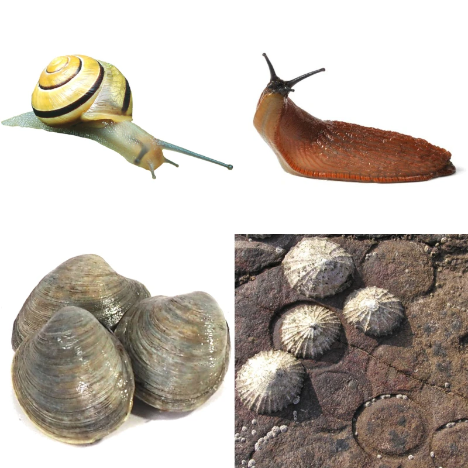
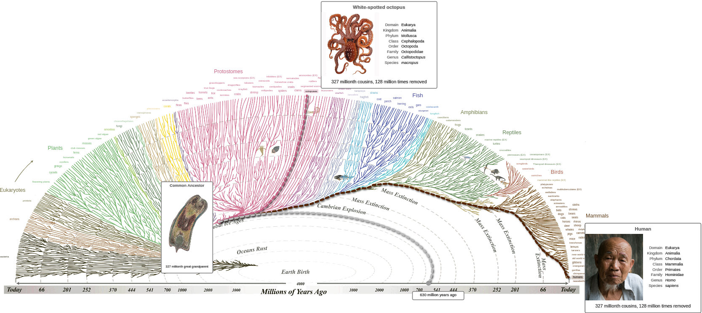
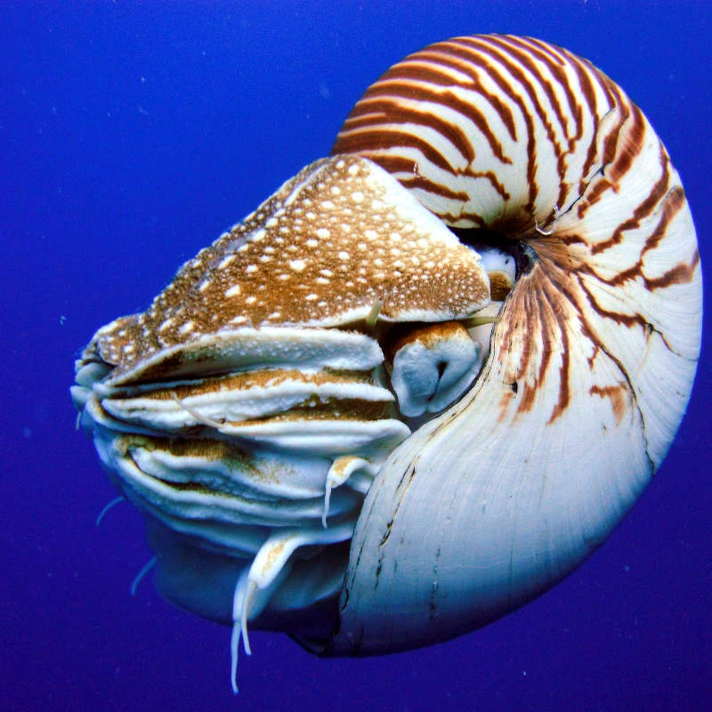
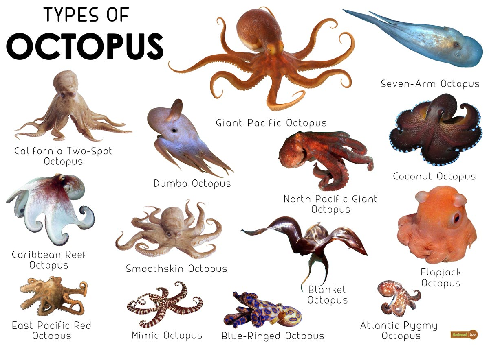
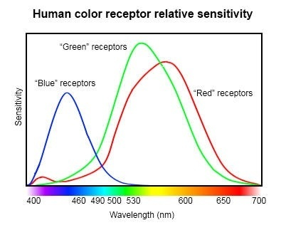
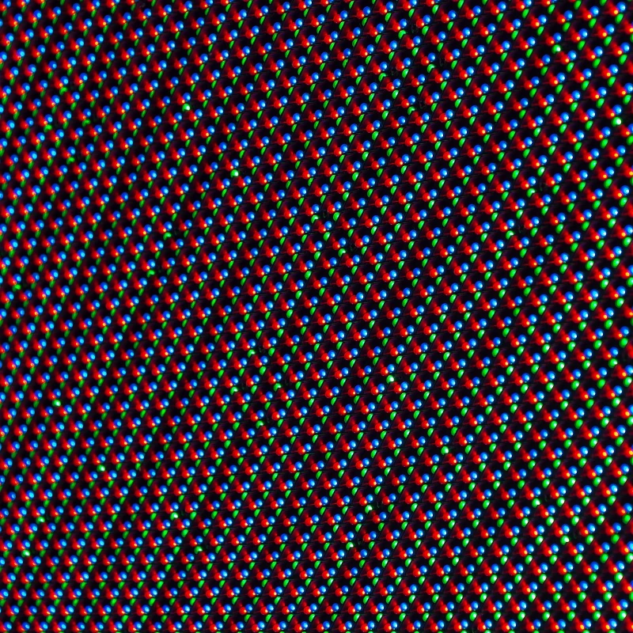
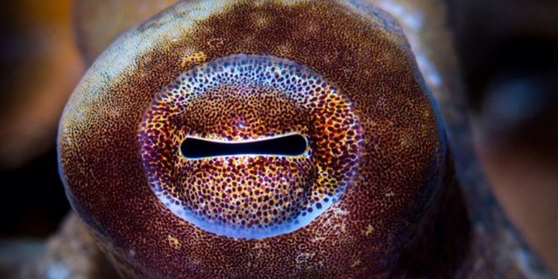
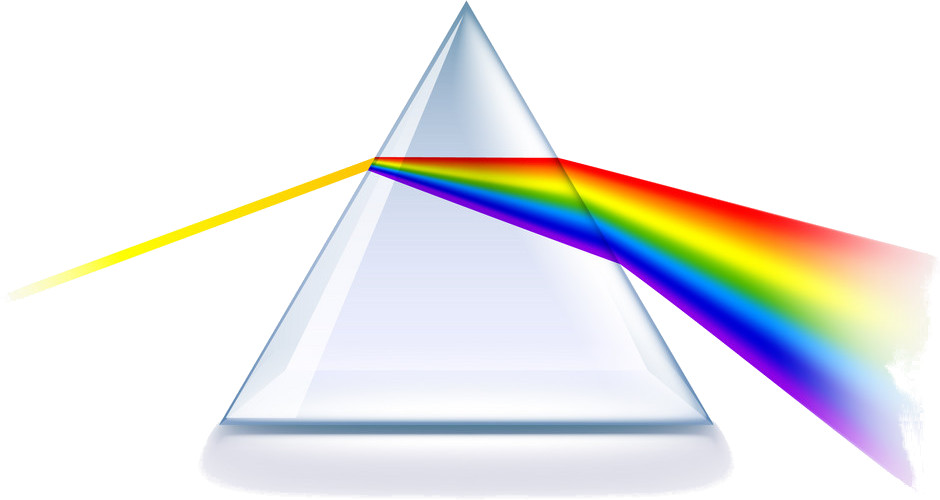
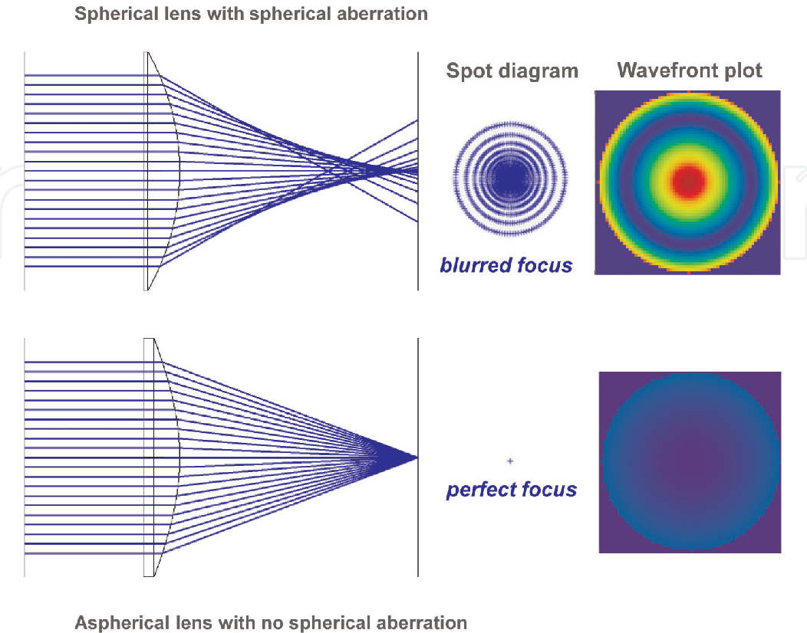

The Octopus's Eye
Octopuses are molluscs. Snails, slugs, clams and limpets are also molluscs. Most molluscs have a hard shell, and a soft body, and most of them live in water. Only snails and slugs live on land, and they like places that are wet.

Molluscs and humans are both animals, but they are very different from each other. Scientists think that the last ancestor we share with molluscs lived over 300 million years ago. That creature did not have anything like eyes.

Octopuses have no shell. Nautiluses are molluscs like octopuses, but they have a shell, and they swim slowly because their shell is heavy.

Octopuses can swim very fast. Scientists think that the first octopuses with no shells lived 100 - 160 million years ago. Perhaps at that time, there were new kinds of fish which ate slow animals. Octopuses who swam fast were not eaten.

Animals that move fast need to see well. The octopus has amazing eyes. they developed to see well in water. An octopus's eyes are very different from yours.
In your eyes, you have about 6 million "cones" which can see three different colours of light: red, green and blue.

On a monitor or smartphone screen, there are tiny light-emitting diodes (LEDs) which produce the same colours that your eye can see. The screen cannot show the colour yellow and your eyes cannot see the colour yellow; it shows red light and green light, and your brain thinks: "Ah! Yellow!" Your brain creates a colour which does not exist, but it feels very natural to you.

You also have about 120 million "rods" which can see any colour of light. They help you see shadows and bright spots, like in a black-and-white photograph.
The octopus eye has no cones. Its eyes are sensitive only to blue light. In water, blue is the brightest colour of light because it has the most energy. But an octopus can change the colour of its skin. It can make its skin the same colour as the place where it is, so no other animals can see it.

The question is: how can an octopus know about different colours, if its eyes can only see one colour?
In 2016, father and son Christopher and Alexander Stubbs wrote a scientific paper, where they said the octopus could perhaps see colour through spheric aberration.

When white light goes through a prism or a circular glass of water, it separates into different colours. In both your eye and the eye of an octopus, there is a lens which is almost a sphere. When you look at something that is close to you (like a book), muscles in your eye press on the lens to make it fatter. This bends the light more, so that the image in your eye is in focus. When you look at something far away (like the moon), the muscles in your eye relax.

Your eyes are always moving. Your brain needs the image in your eyes to change a little all the time. It only sees the differences between two images. If your eyes look at one spot without moving (perhaps because a doctor put an anaesthetic in your eye) then you stop seeing anything.
If you have a good camera, you can focus the image by moving the lens forwards or backwards. The eye of an octopus works the same way. To change focus, the lens in an octopus's eye moves in and out. Perhaps the lens in the octopus's eye is always moving, too, so that different colours of light come into focus at different times. Perhaps the octopus is not seeing colour the way we do. Perhaps it is seeing sharpness of focus instead.
Here is a demonstration. On the left, you can see the colours your human brain creates for you. On the right, you can see what an octopus might see. Click on the Cycle Focus button, to see how an octopus's brain might use spherical abberation to discover colours by changing the focus of its eyes.